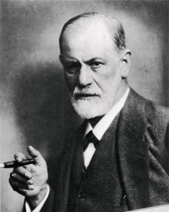

Page1
Page2
Page3

一、代表人物：Sigmund Freud (西蒙.佛洛伊德)
誕生於維也納一個育有三男五女的家庭中他父親就像維也納當時的所有的父親一樣，非常權威，要瞭解Freud 何以會發展出這樣的理論來，其家庭背景是有必要考慮進去的影響因素。 即便Freud家族財力有限，一家人被迫住在一件擁擠的公寓裏，Freud的雙親仍竭盡所能地培育天才洋溢的他。因受限於Freud是猶太人，雖然他有多方面的興趣，其生涯發展是狹隘的，Freud最後選定往醫學方面發展。26嵗時，Freud從維也納大學獲得醫學學位，在4年後榮任該大學教席，擔任講師。Freud將此後的大部分時光奉獻給建立與擴展心理分析理論這個工作。有趣的是，他最富創造力的階段，就是在他遭遇最嚴重情緒困擾時。在他剛跨進40嵗時，出現許多身心失調，以及對死亡的强烈畏懼，還有一些恐懼症。就在此時，Freud投入備極艱辛的自我分析工作，從探索自己夢境的意義，獲得人格發展動力方面的領悟。首先他檢視童年的記憶，並逐步理解到自己對父親强烈的敵意感；也回憶起童年時期對母親所持的性欲，感覺她是迷人，可愛又會保護人的。之後，再透過觀察病人如何在分析中徹底修通其困擾，而建構出其臨床治療理論。
二、主要概念
人性觀點
- 佛洛伊德學派的人性觀基本上是決定論的，根據Freud的觀點，我們的行 爲是由各種非理性的力量，潛意識動機，於生命的前六年在心性發展的關 鍵時期所演變出來的生物與本能驅力所決定。本能(instincts）是佛洛伊德
學派的核心概念，雖説Freud原先用的是性欲力(libido)一詞來代表性的力 量，但他後來已將它擴展為包括所有生的本能(life instincts)能量均屬之。 這些本能是為貫徹個人與種族繁衍的目的而作用的，其導向為成長，發展
與創造。因此，性欲力應視爲動機的來源，雖伴有性能量，但意義并非狹 義的[性]而已，Freud將所有可以帶來悅樂的活動均納入其[生的本能]概念 中，他將大多數的生命目的視爲是在避苦求樂的。Freud也提出死之本能
(death instincts)一詞，來解説攻擊驅力，認爲人們常以攻擊行爲來呈現潛 意識中的死之意願或自傷，傷人意願。
人格結構
- 佛洛伊德的理論認為人格是一個整體，這整體包括了三部份，分別稱為本 我、自我、超我，人格中的三個部分，彼此交互影響，在不同時間內，對 個體產生不同的作用。
（一）本我(id)
- 是人格結構中最原始部分，從出生日起即已存在。構成本我的的成分是人類的基本需求，如飢、渴、性三者都是本我的構成成分。本我的需求產生時，個體要求立即滿足，從支配人性的原則而言，支配本我的是唯樂原則。例如嬰兒每感飢餓時，即要求立刻餵奶，不會考慮母親有無困難。
（二）自我(ego)
- 是個體出生後，在現實環境中由本我分化發展而產生。由本我而來的各種需求，如不能在現實中立即獲得滿足，他就必須遷就現實的限制，並學習到如何在現實中獲得需求的滿足。從支配人性的原則來看，支配自我的是現實原則。此外，自我介於本我與超我之間，對本我的衝動與超我的管制具有緩衝與調節的功能。
（五）超我(superego)
- 是人格結構中居於最高的管制地位，是由於個體在生活中，接受社會文化道德規範的教養而逐漸形成的。超我有兩個重要部分：一為自我理想，是要求自己行為符合自己理想的標準；二為良心，是規定自己行為免於犯錯的限制。因此，超我是人格結構中的道德部分，從支配人性的原則看，支配超我的是完美原則。
三、意識與潛意識
- Freud的最大貢獻有可能就是他提出了潛意識概念及意識層次論，這些概念是瞭解人類行爲與人格問題的關鍵。可支持潛意識的確存在的臨床證據包括：
- 夢：它是潛意識需求，願望及衝突的象徵表現
- 說溜嘴與遺忘：例如忘掉了一個原本極爲熟悉的名字
- 催眠後的暗示作用
- 經由自由聯想技術而獲得的題材
- 經由投射技術而獲得的題材
- 精神症狀的象徵内容
- 對Freud而言，意識只是整體心靈的表層，就像冰山大部分是潛藏於水面之下一樣，心靈的絕大部分是存在於表層直覺之下。潛意識(unconscious)儲存了個人全部的經驗，記憶與被壓抑的題材。需求與動機是難以觸及的---就是無法知覺到的---也是超乎意識所能控制的，大多數的心理功能都存在於知覺領域之外。
四、焦慮
焦慮
- F恐怖的感受，是由先前被壓抑到潛意識的種種感受，欲望經驗，因浮現到知覺表面而產生的，也可能是會促使我們做出某些事來的來的緊張狀態。
現實焦慮
- 是對來自外界的危險至之恐懼感，且其焦慮程度與真實的威脅程度相當。
神經質焦慮
- 因爲害怕本能失去控制，導致自己做出會遭懲處的不當行爲而產生的。
道德焦慮
- 害怕受到自己良心的譴責。具高度良心者，常在做了違背其道德標準的事情之後，感到罪惡不安。
五、自我防衛機制
- 壓（潛）抑作用 （Repression）
- 自我防衛：這種防衛方式是將具有威脅或痛苦的想法和感受統統排除於知覺（意識）之外。
- 行爲上的表現：壓抑是佛洛伊德學派最重要的心理歷程之一，他是許多其他自我防禦方式及精神官能症的根源所在。Freud認爲壓抑就是一種不由自主地將某事排除於潛意識之外。一般認爲出生後五或六年所發生的痛苦的事件，雖有大部分不復記憶，但仍深深地影響往後的行爲。
- 否認作用 （Denial）
- 自我防衛：通常是在面對現實的危險時，視若無睹或充耳不聞。
- 行爲上的表現：否認現實可能是所有自我防衛機轉中最簡單的一種，藉由扭曲個體在創傷情境中的想法，感受與知覺的方式來作用。否認作用與壓抑十分相似，但它通常是在前意識與意識層面運作。
- 反向作用 （Reaction formation）
- 自我防衛：抵抗具威脅性衝動的一種防衛方式就是表現出與之相反的衝動。
- 行爲上的表現：由於可在意識層面做出與内心中困擾著自己的欲望相反的態度和行爲，人們因而得以不必去面對自己種種不當欲念的焦慮。個人常以過分的慈愛來隱藏其怨恨，以極端的優雅來掩蓋内心的反感，或以過度的仁慈來爲殘忍作僞裝。
- 投射作用 (Projection)
- 自我防衛：就是將個人無法接受的欲望或衝動，歸到別人身上去。
- 行爲上的表現：一種自欺性質的機轉，譬如將好色的，攻擊成性的或其他的衝動説是別人具有，而非自己具有的。
- 置換（替代）作用 (Displacement)
- 自我防衛：就是個人將能量從不可觸犯的客體或對象身上，導引到其他的客體或對象身上。
- 行爲上的表現：置換作用是處理焦慮的方法，就是把我們想發泄的衝動，從較具威脅的對象轉到較安全的對象身上去。例如：被上司威嚇的懦弱職員，回到家後才一股腦地將當時不敢對上司發作的敵意發泄到小孩身上來。
- 合理化作用 (Rationalization)
- 自我防衛：爲自己編造出[很好的理由]，以用來解釋並消除自我所受的傷害。
- 行爲上的表現：合理化作用可用來讓某些特定行爲看起來很正當，，故有助於緩和失望所帶來的無邊痛苦。例如在某人得不到自己全力追求的職位時，邏輯思考會告訴他何以失敗的理由，但他常會讓自己相信他真的是一點都不想要那個位置，所以才會如此。
- 昇華作用 (Sublimation)
- 自我防衛：將性或攻擊能量重新導向其他表達管道的結果。
- 行爲上的表現：昇華作用便是將原屬性欲或攻擊的能量，轉爲社會可以接受甚至贊賞的管道。例如：攻擊衝動可以體育活動的管道來表現，人們因而有健康的方式來表達其攻擊感受，甚至能獲贊賞。
- 退化作用 (Regression)
- 自我防衛：返回其早已發展過的不成熟階段，在所退化回去的這個早期發展階段中，外界對他的要求要比現在少多了。
- 行爲上的表現：遭遇巨大的壓力或嚴酷的挑戰時，人們常遁入不成熟且不恰當的行爲反應中，以降低其焦慮。舉例來説，孩童在學校中受到驚嚇時，常陷入嬰兒式的行爲反應中，如哭泣，過度依賴，吸吮拇指，躲起來或者黏著老師不放等等。
- 内射作用 (Introjection)
- 自我防衛：就是個人接受與[吞入](Swallowing)他人的價值觀與行爲標準的過程。
- 行爲上的表現：内射作用也有正向形態，譬如將父母的價值觀整合為自己的一部分，或將治療者的特質與價值吸納爲自己所用等（如果這些都不是未經思辨就盲目接受的話）。負面的例子如：在集中營裏的囚犯，爲了克制他們的强烈焦慮，會透過向侵略者認同的方式來接受敵方的價值觀。
- 認同作用 (Identification)
- 自我防衛：藉由認同成功的原因，成功的組織或人物，讓自己重獲將會被他人賞識的希望。
- 行爲上的表現：認同作用可提高自我價值及保護個人不致產生失敗感。[認同]是孩童習得其性別角色的發展歷程中的一部分，但它也可以是人們在自覺自卑渺小時的一種防衛反應。
- 補償作用 (Compensation)
- 自我防衛：對個人所感知到的弱點善加僞裝，或發展某些正向特質一彌補自身缺陷的過程。
- 行爲上的表現：這個機轉就具有導正適應的價值，所以人們可以試著說：[不要只看到我的弱點，也要看到我的成就。]
Page1
Page2
Page3